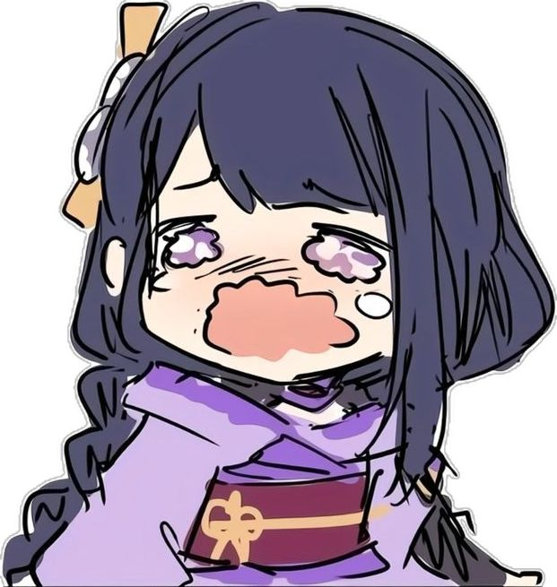

Middlegame
- The phase of the game that occurs after the opening and before the endgame.
It's characterized by active piece play, tactical opportunities, and strategic maneuvering. Most games are decided in the middlegame, making it a crucial phase for developing plans and exploiting weaknesses.
7 middlegame tips:
Do these, and you will beat players of your level or even higher!
Website by: Zoe Thomas D. Luces